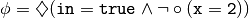
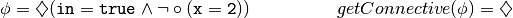
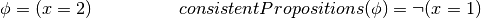
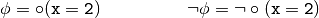
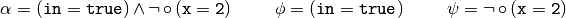
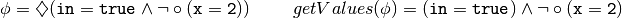

Formula¶
This module contains the class to describe a temporal formula.
-
class
tccMChecker.formula.Formula(data)[source]¶ Bases:
objectThis class represents a temporal formula.
Parameters: data (Dictionary.) – Structure representing the temporal formula. Example: 
>>> from tccMChecker.formula import * >>> phi = Formula({"<>": {"^":{"":"in=true","~":{"o":"x=2"}}}})
Note
Logic operators are represented by the following symbols:
- Globally :
[] - Future :
<> - Next :
o - Negation :
~ - Or :
v - And :
^
-
get_connective()[source]¶ Return the main connective of the formula.
Returns: A string representing the main connective of the formula. Return type: String. Example: 
>>> from tccMChecker.formula import * >>> phi = Formula({"<>": {"^":{"":"in=true","~":{"o":"x=2"}}}}) >>> phi.get_connective() '<>'
-
get_consistent_propositions()[source]¶ Returns the consistent propositions of a formula.
Returns: A structure representing the consistent proposition of the formula. Return type: Dictionary. Example: 
>>> from tccMChecker.formula import * >>> phi = Formula({"": "x=2"}) >>> phi.get_consistent_propositions() {'~': 'x=1'}
-
get_formula()[source]¶ Returns the formula.
Returns: A structure representing the formula. Return type: Dictionary. Example: >>> from tccMChecker.formula import * >>> phi = Formula({"<>": {"^":{"":"in=true","~":{"o":"x=2"}}}}) >>> phi.get_formula() {'<>': {'^': {'': 'in=true', '~': {'o': 'x=2'}}}}
-
get_negation()[source]¶ Returns the negation of the formula.
Returns: The negation of the formula. Return type: Formula.Example: 
>>> from tccMChecker.formula import * >>> phi = Formula({"o":"x=2"}) >>> negPhi = phi.get_negation() >>> negPhi.get_formula() {'~': {'o': 'x=2'}}
-
get_proposition_rules()[source]¶ Returns the consistent propositions of all propositions in the implementation.
Example: Returns: A dictionary containing as key a proposition, and value all possible propositions that are consistent. Return type: Dictionary. >>> from tccMChecker.formula import * >>> phi = Formula({"<>": {"^":{"":"in=true","~":{"o":"x=2"}}}}) >>> phi.get_proposition_rules() {'x=1': {'~': 'x=2'}, 'x=2': {'~': 'x=1'}}
-
get_subformulas()[source]¶ Returns the subformulas attached to a binary operator.
Returns: A list containing the subformulas. Return type: List. Example: 
>>> from tccMChecker.formula import * >>> alpha = Formula({"^":{"":"in=true","~":{"o":"x=2"}}}) >>> subformulas = alpha.get_subformulas() >>> for subformula in subformulas: ... print(subformula.get_formula()) {'': 'in=true'} {'~': {'o': 'x=2'}}
-
get_values()[source]¶ Returns the formula without the outermost unary operator.
Returns: A structure representing the formula without the outermost unary operator. Return type: Dictionary Example: 
>>> from tccMChecker.formula import * >>> phi = Formula({"<>": {"^":{"":"in=true","~":{"o":"x=2"}}}}) >>> phi.get_values() {'^': {'': 'in=true', '~': {'o': 'x=2'}}}
-
is_basic()[source]¶ Checks if the formula is a basic formula (i.e. proposition or it has
 as main connective)
as main connective)Returns: Trueif the formula is a basic formula orFalseotherwise.Return type: Boolean. Example: >>> from tccMChecker.formula import * >>> phi = Formula({"o":"x=2"}) >>> phi.is_basic() True
-
is_negative_formula()[source]¶ Returns if the formula has as main connective.
Returns: Trueif the formula has as main connective orFalseotherwise.Return type: Boolean. Example: >>> from tccMChecker.formula import * >>> phi = Formula({"~":{"o":"x=2"}}) >>> phi.is_negative_formula() True
- Globally :